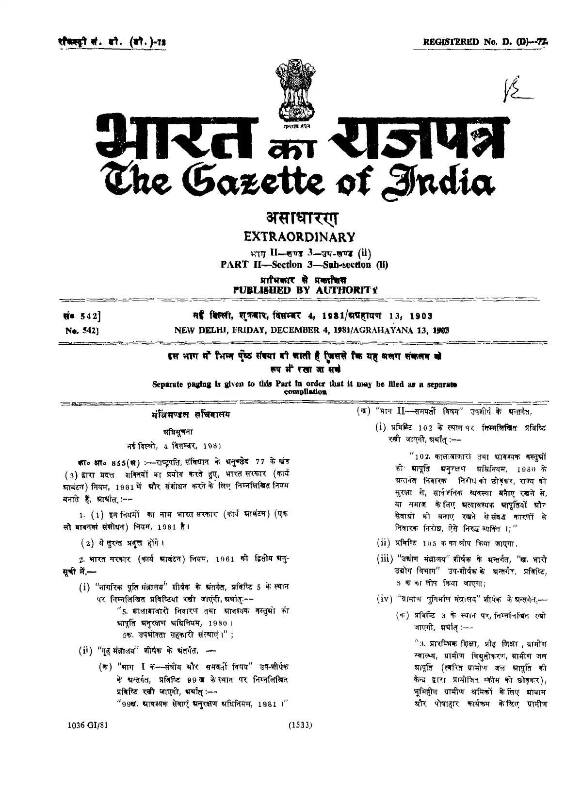
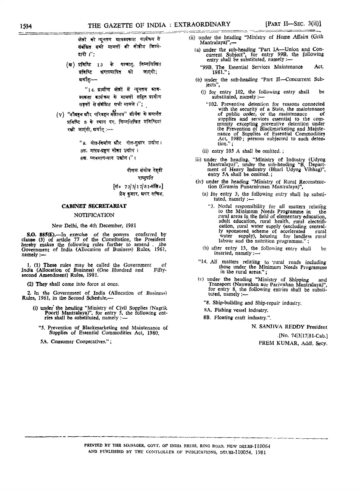

Amendment #152 (S.O. 885(E), 1981)
8 changes: 0 to the First Schedule, 8 to the Second Schedule. 5 applied3 not applied
The order, page by page
Page 1 of 2

Page 2 of 2

12345678Schedule 2 › Ministry of Civil Supplies › entry 5
- 5. Prevention of Blackmarketing and Maintenance of Supplies of Essential Commodities Act, 1980.
- 5A. Consumer Cooperatives.
applied at schedule 2 › ministry MINISTRY OF CIVIL SUPPLIES › group_heading I › entry 5 in the Rules after #152
Schedule 2 › Ministry of Home Affairs › Part IA-Union and Concurrent Subject › entry 99B
- 99B. The Essential Services Maintenance Act
- 1981.
not applied (the change could not be placed in the Rules as read; see How this document was read)
Schedule 2 › Ministry of Home Affairs › Part II-Concurrent Subjects › entry 102
- 102. Proventive detention for reasons connected with the security of a State, the maintenance of public order, or the maintenance of supplies and services essential to the community excepting preventive detention under the Prevention of Blackmarketing and Maintenance of Supplies of Essential…
applied at schedule 2 › ministry MINISTRY OF HOME AFFAIRS › part II › group_heading The following subjects which fall within the… in the Rules after #152
Schedule 2 › Ministry of Home Affairs › Part II-Concurrent Subjects › entry 105 A
not applied (the change could not be placed in the Rules as read; see How this document was read)
Schedule 2 › Ministry of Industry › Department of Heavy Industry › entry 5A
not applied (the change could not be placed in the Rules as read; see How this document was read)
Schedule 2 › Ministry of Rural Reconstruction › entry 3
- 3. Nodal responsibility for all matters relating to the Minimum Needs Programme in the rural areas in the field of elementary education adult education, rural health, rural electrification, rural water supply (excluding centrally sponsored scheme of accelerated rural water supply), housing for…
applied at schedule 2 › ministry MINISTRY OF RURAL RECONSTRUCTION › entry 3 in the Rules after #152
after Schedule 2 › Ministry of Rural Reconstruction › entry 13
- 14. All matters relating to rural roads including those under the Minimum Needs Programme in the rural areas.
applied at schedule 2 › ministry MINISTRY OF RURAL RECONSTRUCTION › entry 14 in the Rules after #152
Schedule 2 › Ministry of Shipping and Transport › entry 8
- 8. Ship-building and Ship-repair industry.
- 8A. Fishing vessel industry.
- 8B. Floating craft industry.
applied at schedule 2 › ministry Ministry of Shipping and Transport › group_heading I › entry 8 in the Rules after #152
How this document was read
Known issues
| Change | Issue | Known as |
|---|---|---|
| 2 | change 2: no group_heading Part IA-Union and Concurrent Subject under schedule 2 › ministry MINISTRY OF HOME AFFAIRS | Home Affairs' structure |
| 4 | change 4: no entry 105 A under schedule 2 › ministry MINISTRY OF HOME AFFAIRS › part II | Home Affairs' structure |
| 5 | change 5: no entry 5A under schedule 2 › ministry MINISTRY OF INDUSTRY › department B | Entries not in the state |
From the Government of India (Allocation of Business) Rules, 1961 and their amendments, as published by the Cabinet Secretariat (cabsec.gov.in), read by orgpedia. The readings of the older scanned gazettes have known gaps.